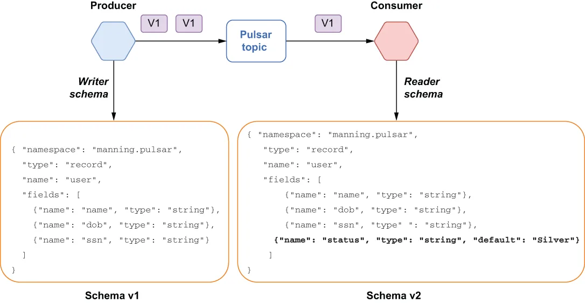
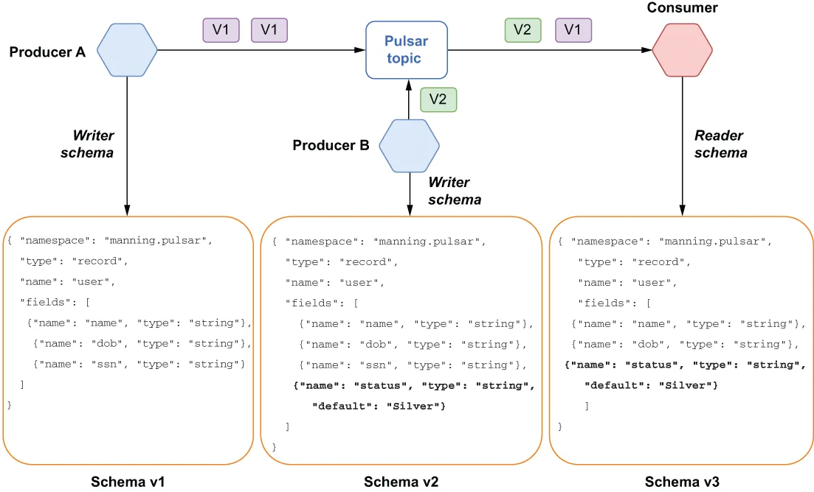
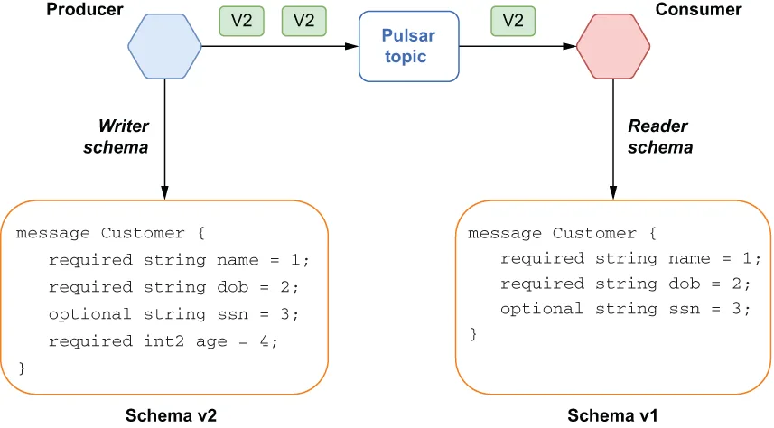
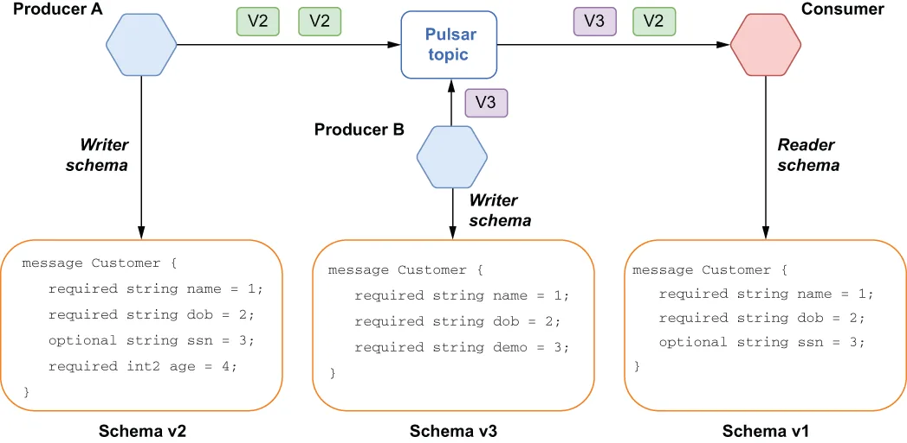

The Pulsar schema registry supports six different compatibility strategies, which can be configured on a per-topic basis. It is important to point out that all of the compatibility checks are from the consumer’s perspective, even when it comes to the compatibility checks for producers, as the goal is to prevent the introduction of messages that the existing consumers cannot process. The Schema registry will use the underlying serialization library’s (e.g., Avro’s) compatibility rules to determine whether or not the new schema is compatible with the current schema. The Pulsar schema registry’s default compatibility type is BACKWARD, which is described in greater detail, along with the others, in the following sections.
Pulsar schema registry 支持六种不同的兼容性策略，可以按主题逐个配置。有一点必须指出：所有的兼容性检查都是从消费者的视角出发的——即便是针对生产者的兼容性检查也是如此，因为其目标在于防止引入那些现有消费者无法处理的消息。schema registry 会使用底层序列化库（例如 Avro）的兼容性规则，来判断新的 schema 是否与当前 schema 兼容。Pulsar schema registry 的默认兼容性类型是 BACKWARD，它与其余几种策略一起，在下面各节中有更详细的说明。
Backward compatibility
向后兼容
Backward compatibility means that the consumer can use a newer version of the schema and still be able to read messages from a producer that is using the previous version. Consider the scenario where both the producer and consumer start out using the same version of the Avro schema: v1. One of the teams responsible for developing one of the consumers decides to add a new field called status to the schema to support a new customer loyalty program that has various status tiers, such as silver, gold, and platinum, as shown in figure 7.8. In this case, the new schema version, v2, would be considered backward compatible, since it specifies a default value for the newly added field.
向后兼容（backward compatibility）指的是：消费者可以使用较新版本的 schema，却依然能够读取来自一个使用旧版本 schema 的生产者的消息。设想这样一个场景：生产者和消费者一开始都使用同一个版本的 Avro schema，即 v1。负责开发其中一个消费者的团队决定往 schema 里加一个名为 status 的新字段，用以支持一项新的客户忠诚度计划——该计划设有若干等级，例如银卡、金卡和白金卡，如图 7.8 所示。在这种情况下，新的 schema 版本 v2 会被认为是向后兼容的，因为它为这个新加的字段指定了默认值。

Figure 7.8 Backward compatible changes are those that allow a consumer that is using a newer version of the schema to still be able to process messages that are written using the previous version of the schema.
图 7.8 向后兼容的改动是指这样一类改动：使用较新版本 schema 的消费者，仍然能够处理那些用旧版本 schema 写入的消息。
This allows data written with v1 of the schema to be read by the consumer, since the default value specified in the newer schema will be used for the missing field when deserializing the messages serialized with v1, thereby treating all members as having silver status in the consuming application.
这使得用 v1 schema 写入的数据依然能被该消费者读取——因为在反序列化那些用 v1 序列化的消息时，缺失的这个字段会采用较新 schema 中所指定的默认值，于是消费方应用程序会把所有会员都当作具有银卡等级来处理。
To support this type of use case, you can use the BACKWARD schema compatibility strategy. However, that only supports the case where you have consumers that are one schema version ahead of your producers. If you want to support producers that are more than one schema version behind your consumers, you can use the BACKWARD_TRANSITIVE compatibility strategy instead.
要支撑这类用例，你可以使用 BACKWARD schema 兼容性策略。不过，它只支持这样一种情况：你的消费者比生产者领先一个 schema 版本。如果你希望支持的那些生产者落后消费者不止一个 schema 版本，那么可以改用 BACKWARD_TRANSITIVE 兼容性策略。
Let’s expand upon the use case from the previous example. Now we have a new microservice added to the application that is responsible for determining a customer’s loyalty status and is producing messages that contain the status field.
让我们在前一个例子的基础上再扩展一下。现在应用中新增了一个微服务，它负责判定客户的忠诚度等级，并生产包含 status 字段的消息。
Also, the microservice that originally introduced the need for the status field has undergone a security review, and it has been determined that having the customer’s social security number poses too big of a security risk, so it has been removed. As you can see from figure 7.9, we still have the original producer that is using schema v1, the new microservice that is using v2 of the schema that includes the status field, and a consumer that is using a third schema version that has removed the ssn field.
此外，当初引入 status 字段需求的那个微服务经历了一次安全评审，评审认定保留客户的社会安全号码带来的安全风险过大，因此该字段已被移除。从图 7.9 中可以看到：我们仍然有使用 schema v1 的原始生产者、使用包含 status 字段的 v2 schema 的新微服务，以及一个使用第三个 schema 版本（其中已移除 ssn 字段）的消费者。

Figure 7.9 Backward transitive compatible changes are those that allow a consumer that is using a newer version of the schema to still be able to process messages that are written using any of the previous versions of the schema.
图 7.9 向后传递兼容的改动是指这样一类改动：使用较新版本 schema 的消费者，仍然能够处理那些用任意旧版本 schema 写入的消息。
In order to be considered backward transitive compatible, the new consumer schema version, v3, would have to be able to process messages from both active producers (e.g., schema versions v1 and v2). Since v3 specifies a default value for the status field, data written with v1 of the schema can be read by the consumer, since the default value specified in v3 of the schema will be used for the missing field when deserializing the messages serialized with v1. Similarly, since the messages serialized with v2 of the schema contain all of the fields required in v3, the consumer can simply ignore the extra ssn field in these messages.
要被认为是向后传递兼容的，新的消费者 schema 版本 v3 必须能够处理来自两个活跃生产者的消息（即 schema 版本 v1 和 v2）。由于 v3 为 status 字段指定了默认值，用 v1 schema 写入的数据就能被该消费者读取——因为在反序列化那些用 v1 序列化的消息时，缺失字段会采用 v3 schema 中所指定的默认值。同样地，由于用 v2 schema 序列化的消息包含了 v3 所要求的全部字段，消费者只需忽略这些消息中多出来的那个 ssn 字段即可。
Forward compatibility
向前兼容
Forward compatibility means that the consumer can use an older version of the schema and still be able to read messages from a producer that is using a new version. Consider the scenario where both the producer and consumer start out using the same version of the protobuf schema: v1. One of the teams responsible for developing one of the producers decides to add a new field called age to the schema to support a new marketing program based on different age groups, as shown in figure 7.10.
向前兼容（forward compatibility）指的是：消费者可以使用较旧版本的 schema，却依然能够读取来自一个使用新版本 schema 的生产者的消息。设想这样一个场景：生产者和消费者一开始都使用同一个版本的 protobuf schema，即 v1。负责开发其中一个生产者的团队决定往 schema 里加一个名为 age 的新字段，用以支持一项基于不同年龄段的营销计划，如图 7.10 所示。

Figure 7.10 Forward compatible changes are those that allow a consumer that is using an older version of the schema to still be able to process messages that are written using a newer version of the schema.
图 7.10 向前兼容的改动是指这样一类改动：使用较旧版本 schema 的消费者，仍然能够处理那些用较新版本 schema 写入的消息。
In this case, the new schema version, v2, would be considered forward compatible, since it simply added a new field that wasn’t in the previous version. This allows data written with v2 of the schema to be read by the consumer, since the newly added field will be ignored when deserializing the messages serialized with v2. The consumer can continue processing the messages, since it does not have any dependency on the newly added age field.
在这种情况下，新的 schema 版本 v2 会被认为是向前兼容的，因为它只是加了一个旧版本中不存在的新字段。这使得用 v2 schema 写入的数据依然能被该消费者读取——因为在反序列化那些用 v2 序列化的消息时，新加的字段会被忽略。消费者可以继续处理这些消息，因为它对新加的 age 字段没有任何依赖。
To support this type of use case, you can use the FORWARD schema compatibility strategy. However, that only supports the case where you have consumers that are one schema version behind the message producers. If you want to support producers that are more than one schema version ahead of your consumers, then you can use the FORWARD_TRANSITIVE compatibility strategy instead.
要支撑这类用例，你可以使用 FORWARD schema 兼容性策略。不过，它只支持这样一种情况：你的消费者比消息生产者落后一个 schema 版本。如果你希望支持的那些生产者领先消费者不止一个 schema 版本，那么可以改用 FORWARD_TRANSITIVE 兼容性策略。
Let’s expand upon the use case from the previous example. Now we have a new microservice added to the application that is responsible for determining a customer’s demographic based on the age field, and that returns a message containing a brand-new field, demo, and eliminates the optional ssn field, as shown in figure 7.11.
让我们在前一个例子的基础上再扩展一下。现在应用中新增了一个微服务，它负责依据 age 字段判定客户所属的人群类别，并返回一条消息，其中包含一个全新的字段 demo，同时去掉了可选的 ssn 字段，如图 7.11 所示。

Figure 7.11 Forward transitive compatible changes are those that allow a consumer using an older version of the schema to still be able to process messages that are written using any of the newer versions of the schema.
图 7.11 向前传递兼容的改动是指这样一类改动：使用较旧版本 schema 的消费者，仍然能够处理那些用任意较新版本 schema 写入的消息。
In order to be considered forward transitive compatible, the consumer schema version, v1, would have to be able to process messages from both active producers (e.g., schema versions v2 and v3). Since v1 specifies that the ssn field is optional, data written with v3 of the schema can be read by the consumer, because this field is not required, and the consumer must be prepared to handle null values for this field. Also, since the messages serialized with v2 and v3 both contain additional fields that are not specified in v1, the consumer can simply ignore these extra fields in the messages, as they are not required by the consumer.
要被认为是向前传递兼容的，消费者的 schema 版本 v1 必须能够处理来自两个活跃生产者的消息（即 schema 版本 v2 和 v3）。由于 v1 中声明 ssn 字段是可选的，用 v3 schema 写入的数据就能被该消费者读取——因为这个字段并非必需，而消费者必须做好处理该字段为空值的准备。此外，由于用 v2 和 v3 序列化的消息都含有一些 v1 中并未声明的额外字段，消费者只需忽略这些消息里的多余字段即可，因为它们并不是消费者所必需的。
Full compatibility
完全兼容
Full compatibility means the schema is both backward and forward compatible. Data serialized using an older version of the schema can be deserialized with the new schema, and data serialized using a newer version of the schema can also be deserialized with the previous version of the schema.
完全兼容（full compatibility）指的是该 schema 既向后兼容又向前兼容。用较旧版本 schema 序列化出来的数据，可以用新的 schema 反序列化；而用较新版本 schema 序列化出来的数据，同样也可以用旧版本的 schema 反序列化。
In some data formats, such as JSON, there are no full-compatible changes. Every modification is either only forward or backward compatible. But in other data formats, like Avro or protobuf, where you can define fields with default values, adding or removing a field with a default value is considered a fully compatible change. To support this type of use case, you can use either the FULL or FULL_TRANSITIVE schema compatibility strategies.
在某些数据格式中（例如 JSON），并不存在完全兼容的改动，任何一次修改都只能是向前兼容或向后兼容其中之一。但在另一些数据格式中，比如 Avro 或 protobuf——它们允许你为字段定义默认值——增加或移除一个带默认值的字段就被视为一次完全兼容的改动。要支撑这类用例，你可以使用 FULL 或 FULL_TRANSITIVE 这两种 schema 兼容性策略中的任意一种。